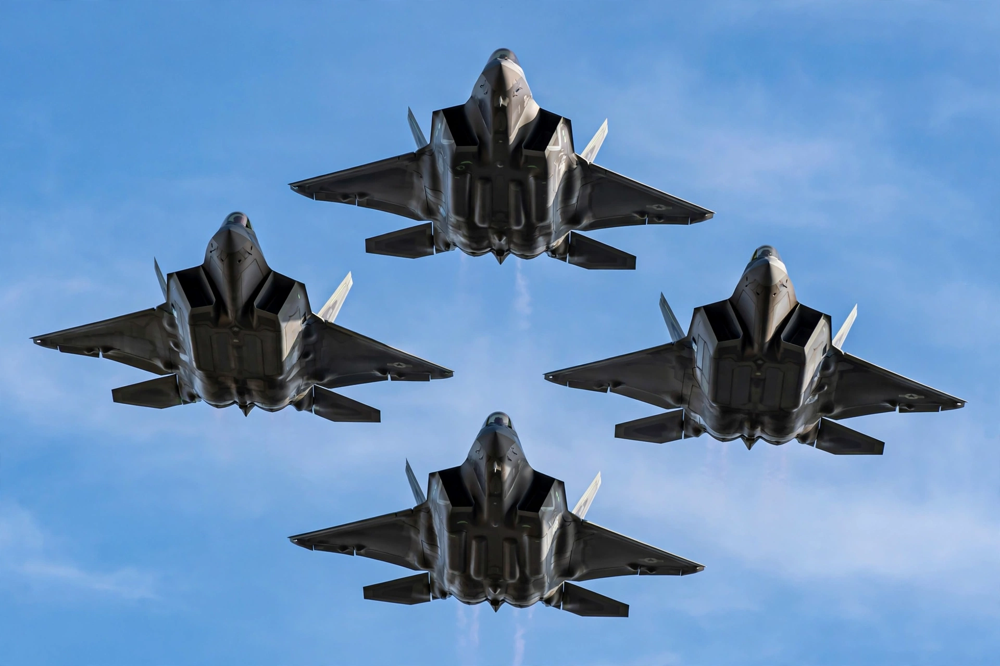

Air force
From Wikipedia, the free encyclopedia

Fighter aircraft of a modern air forceAn air force is the branch of a nation's armed forces primarily responsible for aerial warfare. Air forces typically field fighter, bomber, transport, reconnaissance and support aircraft, and are commanded by senior air officers (in some countries, "air marshals" or generals).
History
Military aviation began with balloons and then fixed-wing aircraft in the early 20th century. The first independent air forces emerged at the end of the First World War — Britain's Royal Air Force (1918) is generally regarded as the first. Air power theory was shaped by figures such as Giulio Douhet, Billy Mitchell and Hugh Trenchard.
Roles
- Winning and maintaining air superiority
- Strategic and tactical bombing
- Close air support of ground forces
- Airlift and logistics
- Intelligence, surveillance and reconnaissance
- Air defence, often including ground-based systems
- In some nations, operation of strategic nuclear missiles
Organisation
Air forces are structured into commands, groups, wings, squadrons and flights. The United States Air Force is the world's most powerful; other major air forces include those of Russia, China, India and the United Kingdom.